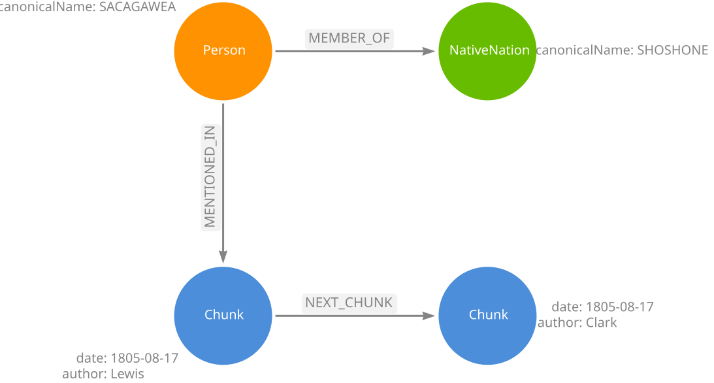
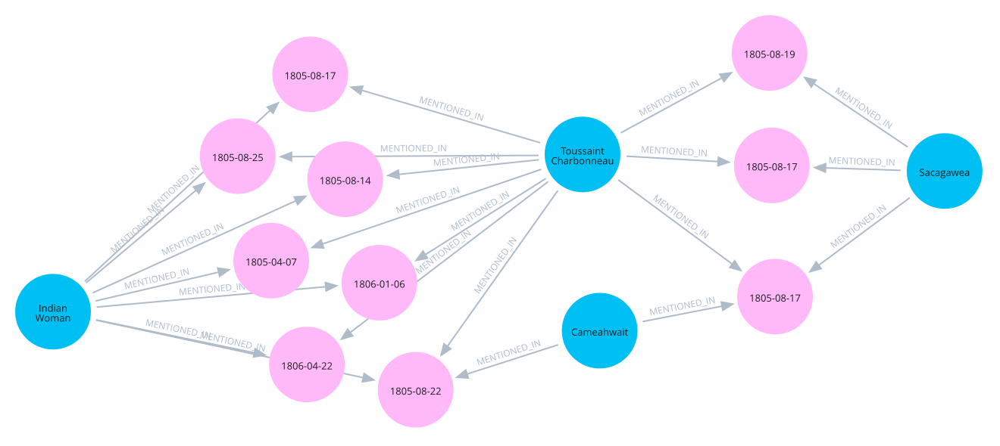
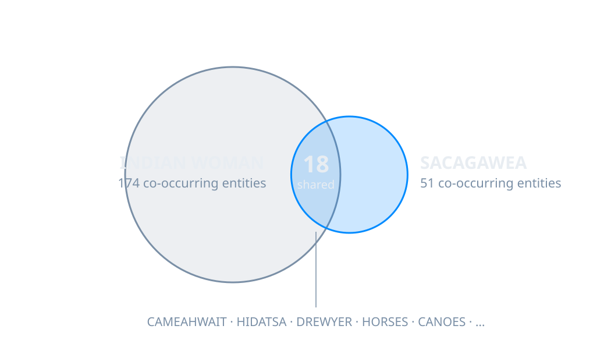
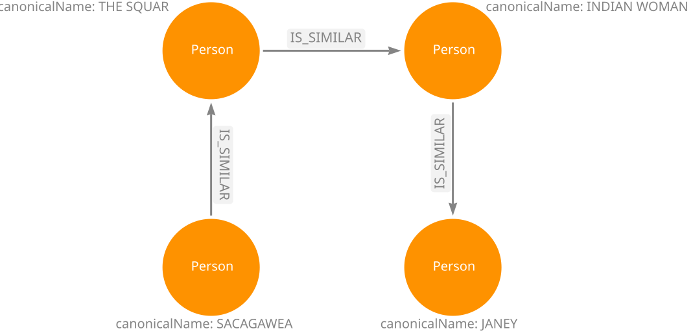
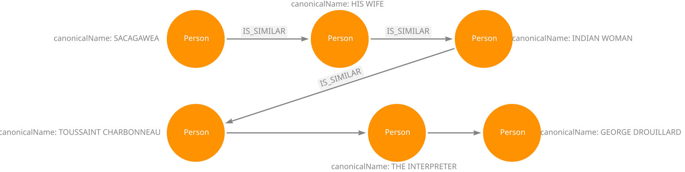
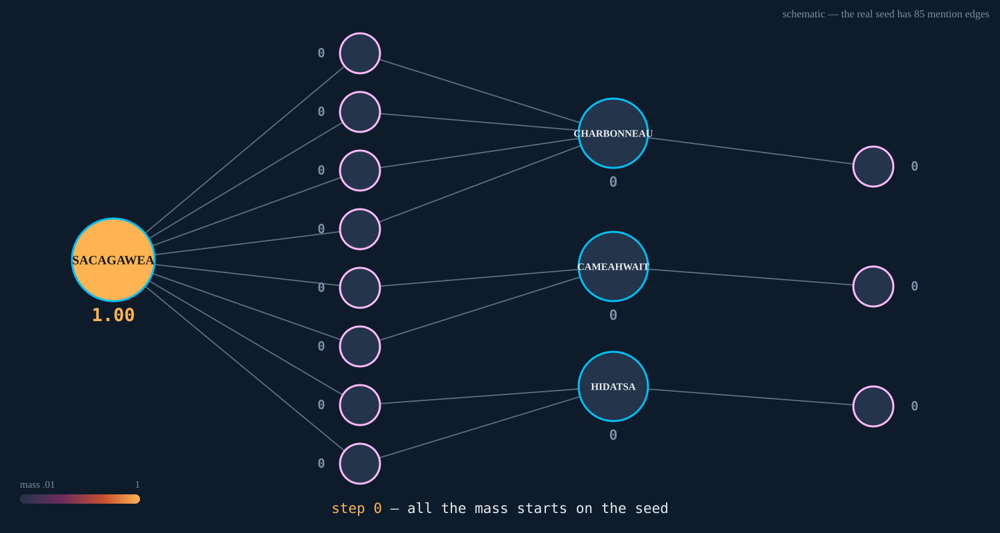
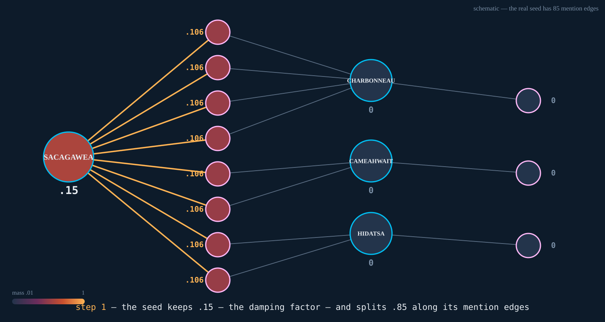
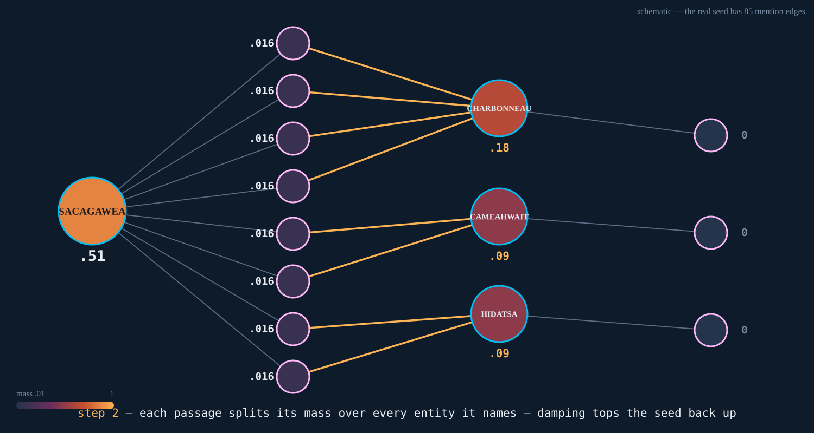
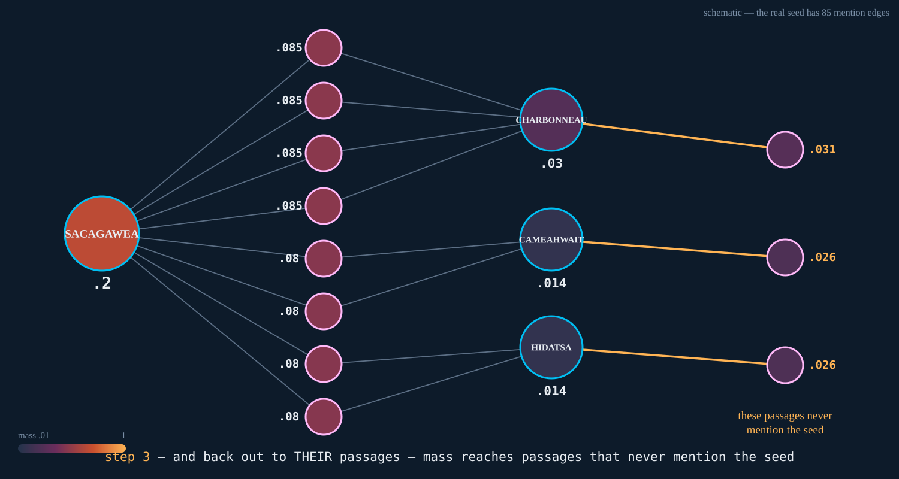
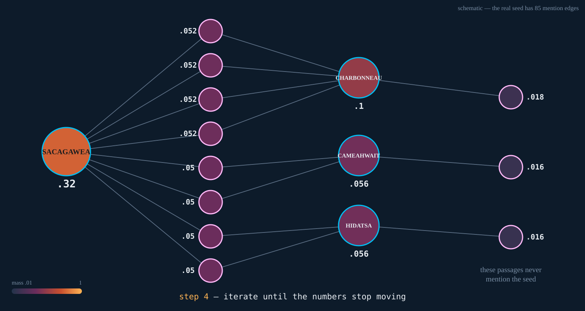

"What was Toussaint Charbonneau's role on the expedition?"
§0.1 screenshot — a real NEO4J_DATABASE=lewisclark
demo_baseline.py run, top-8 with text previews, terminal styled for
the projector. Rank 1's "for his Services as an enterpreter" must
read from the back row. Code gate: needs
--vector-only or a small
demo_baseline.py, or it spoils §5.
§0.1 · 1:15
2 of 8
passages in that window are about the man you asked about
69 passages in this corpus mention Charbonneau.
67 of them are outside the window.
§0.2 · 1:00
"Nothing here is a bad embedding.
The retrieval did exactly what it was designed to do. That's the problem."
§0.3 · 0:45
Graph Algorithms for RAG
Nathan Smith · Neo4j · KCDC 2026
Last year: why a knowledge graph.
This year: what the algorithms do with it.
§0.3 · title
Whoami, as a graph
§0.3b bio-as-graph — port slide 2 of
rag_relationship_problem.pptx, redrawn in
arrows.app and exported as SVG.
Two fixes on port: Neo4j tenure 5 → 6
years; the original has a typo, one edge reads
PREIVIOUS_JOB.
Shape: (Person)-[:WORKS_AT]->(Position)-[:AT_COMPANY]->(Neo4j),
PREVIOUS_JOB chain to Lovevery (1y) and PRA Health
Sciences (5y), PLAYS piano/organ,
SPEAKS French/Swedish,
ORGANIZES Data Science KC.
§0.3b · 0:10
§0.3b · 0:05
Where we're going
0 the failure
4 entities are a mess
8 does it help?
1 what's a graph
5 ranking can't tell people apart
9 how to implement
2 what's Graph RAG
6 context is redundant
10 take-homes
3 the roadmap
7 can't explain the answer
§0.3b · 0:15
Nodes, relationships — and this corpus

§1.1 · 1:00
The one distinction that matters
relational
graph
the connection is computed at query time — match IDs across tables
the connection is stored — follow the pointer
cost grows with the tables you join
cost grows with the edges you touch
§1.2 · 1:00
The four words you need
Label — what kind of node. Person, Chunk, NativeNation
Relationship type — what kind of edge. MENTIONED_IN, MEMBER_OF
Property — data on either. canonicalName, date, embedding
Degree — how many edges a node has. Remember this one.
§1.3 · 1:00
One database. One retrieval step.
§2.1 architecture diagram — one database boundary drawn as one box,
containing the vector index (chunk embeddings) and the knowledge graph
(entities, edges), both feeding one retrieval step → context window → LLM.
"One retrieval step" is the caption that matters.
§2.1 · 1:00
"give the agent a structure it can navigate, not just a box it can search"
— Zach Blumenfeld, Scaling Karpathy's LLM wiki
A vector store answers one question: what's near this?
National Innovation Centre for Data, Reducing hallucinations with GraphRAG
510 multi-source questions (MoNaCo) · 28,000 Wikipedia articles · three pipelines
Vector RAG
Vector+graph
Zero-shot
Factual correctness (precision)
0.15
0.36
0.43
Factual correctness (recall)
0.13
0.33
0.39
Fine-grained truthfulness
35
63
40.5
Coarse truthfulness
−31
−49
−127
Total tokens (median)
41,694
45,695
1,108
Precision/recall measure knowledge;
truthfulness measures honesty about the limits of that knowledge.
Zero-shot has more knowledge of Wikipedia than either
retrieval system — and no idea when it's making things up.
Coarse truthfulness favors plain vector RAG
(−31 vs −49) — because it refuses to answer far more often.
Refusing isn't winning.
The study was funded by Neo4j.
Disclosed in the paper. Now disclosed here.
§2.3 · 2:45 → §2.3 · honesty
From the paper to your pipeline
Build time
Query time
Two stages. Four failures.
stage
the failure you've felt
the algorithm
Build
Your entities are a mess
node similarity + WCC
Query
Your ranking can't tell people apart
personalized PageRank
Query
Your context is redundant
Leiden
Query
You can't explain the answer
Yen's k-shortest paths
§3.1 · 1:00
Section 4 · Build time
"Your entities are a mess"
node similarity + weakly connected components
The same man, five ways
CLARK · CAPT. CLARK · WILLIAM CLARK · Capt Clark · Wm. Clark
Every one of those is a separate node.
§4.1 · 0:45
8
chunks from which SACAGAWEA was extracted by name
…and the eighteen other names she was extracted under
SACAGAWEA INDIAN WOMAN THE INDIAN WOMAN
OUR INDIAN WOMAN THE INDIAN WOMAN WITH US SQUAR
THE SQUAR THE SQUAW HIS SQUAR
SQUARWIFE SQUAR INTERPRETRESS SQUAR WIFE TO SHABONO
JANEY THE WIFE OF SHABONO WIFE OF SHABONO
SNAKE INDIAN WIFE INTERPRETERS WIFE OUR INTERPRETER
THE SNAKE WOMAN
It scrapes a curated list of her surface forms off a website.
There is no lewis-clark.org for your corpus.
§4.4 · 1:00
Two names that keep appearing alongside
the same people, places and dates could be the same entity

§4.5 · 1:15 → §4.5 · the diagram
Find the similarity signal in your graph
entity ↔ entity co-occurrence, weighted by shared chunk count
a filtered node-similarity call, restricted to same-label pairs
the structure does the work — co-occurrence and
similarity are traversals of edges the graph already has
union similarity with string and alias signals

§4.5 · the how → §4.5 · OVERLAP
The closed component — demo_resolution.py, recording
INDIAN WOMAN + INTERPRETERS WIFE + SACAGAWEA + SQUAR INTERPRETRESS
+ SQUAR WIFE TO SHABONO + THE INDIAN WOMAN + THE INDIAN WOMAN WITH US
+ THE SQUAR + THE SQUAW + THE WIFE OF SHABONO
Ten surface forms. One entity. No website.
And now the number, because this is what it bought
passages you get for "Sacagawea"
unresolved — the node namedSACAGAWEA
8
her other 13 names, standing separately
40 more, over 13 nodes
after resolution — one node
47
§4.6 · 1:30 → §4.6 · the receipt
Node similarity delivers recall.
An LLM adjudicator delivers precision.
people in the graph
811
every possible pair
328,455
what the signals propose
~1,100
what that costs to adjudicate
fractions of a cent
§4.7 · 1:00
The signals identify pairwise similarity — but equality is transitive
A ≈ B and B ≈ C is a claim about A and C,
whether you meant to make it or not.
Weakly Connected Components — the implications, before you merge
Follow the edges, ignoring direction. Everything you can reach is one
component.

§4.8 · 1:45 → §4.8 · WCC
Spot potential over-merges before they happen

§4.8 · the bridge
A clean graph opens the door to great retrieval.
§4.9 · 0:30
Section 5 · Query time
"Your ranking can't tell people apart"
entity-seeded personalized PageRank
"What was Toussaint Charbonneau's role on the expedition?"
1. Chabono <- him: paid off "for his Services as an enterpreter"
2. Duriaur <- a Sioux go-between
3. (nobody) <- the return to St. Charles
4. Dourion <- the Sioux interpreter
5. Durion, Gravelin <- Sioux and Ricara interpreters
6. Drewyer, Charbono <- him, in the departure roster
7. (nobody) <- a Minetarree chief pays a visit
8. Gravline <- the barge pilot
Two of eight are about the man you asked about.
§5.1 · 1:15
Co-typed entity substitution
You asked what this man did.
It told you what an interpreter does.
§5.2 · 0:45
Your corpus has forty engineers.
You ask what Chen owns.
You get three passages about Rodriguez
owning a similar service.
§5.2 · the slide they photograph
How personalized PageRank actually works
PageRank: what is important in this graph?
Personalized PageRank: what is important
relative to these nodes?
Put mass on the node you care about. Let it spread.





§5.3 · 1:30 → §5.3 · the animation
Damping d is a horizon, not a tuning knob
share of mass within k steps = 1 − d(k+1)
damping
mass within 3 steps
0.45
96%
0.85
48%
§5.3 · damping
MENTIONED_IN is a discrete edge
Either extraction attached the entity, or it didn't.
Your entity resolution will never be perfect.
So stop building retrieval that needs it to be.
Question mentions a tree. Your graph has four
POPULUS species — and you genuinely do not know
which one is "real."
§5.4 · 1:15 → §5.4 · the reframe
Seeds chosen for the Pacific question, from the question alone
Cosine rank 20 · 305 characters · and it never says her name
"a french man by Name Chabonah, who Speaks the Big Belley language visit us,
he wished to hire & informed us his 2 Squars were Snake Indians, we engau
him to go on with us and take one of his wives to interpet the Snake
language"
1804-11-04
§5.4 · the receipt → §5.4 · protected
Top entities by how many passages mention them
825 MERIWETHER LEWIS <- 28% of the corpus
587 CERVUS CANADENSIS (elk)
506 WILLIAM CLARK
458 ODOCOILEUS HEMIONUS (mule deer)
396 BISON BISON
348 MISSOURI RIVER
297 DREWYER
What hubs do to a naive walk — and what three choices do about it
reproduces the vector baseline byte for byte 14 questions, 14 identical orderings
§5.8 · 0:20
LIVE DEMO
NEO4J_DATABASE=lewisclark python scripts/demo_pagerank.py \
"What was Toussaint Charbonneau's role on the expedition?" \
--seeder decomposed
named in the question: 'Toussaint Charbonneau' (Person, via fulltext)
TOUSSAINT CHARBONNEAU (Person) weight 1.000
Cosine top-8: 2 of 8 passages carry him.
Blended top-8: 6 of 8.
"Mr. Tousent Chabono, Enlisted as an Interpreter this evening"
1805-03-18 · the hiring itself · cosine rank 22
§5.9 · 0:55 · LIVE → §5.9 · the promotion
Three things it cannot do
1 · It combines evidence — but you don't choose the weights.
2 · It cannot enumerate or order.
"What was happening in the days before Sergeant Floyd died?"
18 passages exist in that week. Cosine's top-8 contains 3.
So does every graph variant I tried — including one with the journal's own
NEXT_CHUNK sequence and a long walk:
3 of 18.
3 · It is bounded by extraction.
"When was the keelboat sent back down the Missouri?" — the boat the
entire first year happened on. Here is every keelboat entity in the graph:
'keelboat' -> (nothing)
There is no keelboat.
§5.10 · 1:00 → §5.10 · limit 2 → §5.10 · limit 3
Three retrieval modes. Three different things they can't do.
good at
blind to
cosine
topical resemblance
telling same-type entities apart
entity-seeded PPR
identity, corroboration
ordering, completeness, choosing its own weights
Cypher / filters
exact enumeration and constraints
anything you can't write down
This is why the answer is not one retriever. It's knowing which question you have.
§5.10 · the landing
project the graph
67 ms, once
plain cosine top-8
6 ms
this, on a fresh question
~215 ms
~35× plain vector — and it doesn't matter.
The generation call you're about to make dwarfs 200 ms.
§5.11 · 0:25
"What goods did the expedition trade with Native nations along the route?"
Entities named: none.
The promotion — cosine rank 77
Carried by BUTTONS — a Supply node in 5 passages
"having exhausted all our merchandize we are obliged to have recourse to
every subterfuge… our traders McNeal and York were furnished with
the buttons which Capt. C. and myself cut off our coats,
some eye water and Basilicon which we made for that purpose… in the evening
they returned with about 3 bushels of roots and some bread"
1806-06-02
§5.12 · 1:00 → §5.12 · the receipt
"What do we know about Sacagawea's brother?"
mode
its top-8 contains
cosine
tomahawk recovery, horse butchering — 0 of 16
filter on SACAGAWEA
can only ever see 2 of 16 — he's mostly in passages she isn't
blend with the walk
her biography — 0 of 16
What the walk actually did
"Charbono, the Indian Woman, Cameahwait and
about 50 men… arrived"
pure walk, rank 4 · cosine had this passage at 1187
The walk's top-8 hands you
the thing you were missing — the name.
§5.13 · 0:45 → §5.13 · two-step
Cosine retrieves the topic. The entity layer retrieves the entity.
And the seed's degree tells you which tool to spend.
the question…
do this
names a well-tagged entity in many passages
filter on the tag and stop — the walk just dilutes
names an entity in few passages
walk — the filter can't fill a window, and the bridges are strong
names someone related to the answer
walk for the name, then query the name
names nothing
walk from cosine's top passages — nothing else runs
§5.14 · 0:30 · photograph slide
Section 6 · Query time
"Your context is redundant"
Leiden community detection, and conductance
"What illnesses and injuries did the corps deal with?"
Conductance — the share of a community's edge weight that leaves it
Rule of thumb (Blumenfeld's Karpathy-wiki post):
≤0.35 is a tight theme you can build on, ≥0.60 is a loose one you shouldn't.
all 47 communities
median 0.27 · 35 of 47 tight · none loose
the five largest (on the last slide)
median 0.37
the other 42
median 0.25
The big ones are the loose ones.
§6.3 · conductance
The whole fix
wide = expand(question, k=50) # section 5's walk, deeper slate
window = diversify(wide, max_per_community=2) # <= 2 chunks per community
months
communities
near-dup pairs
walk top-8
1
1
2
walk, capped
4
5
0
What the freed slots filled with (hand-read)
1806-08-12 Lewis shot through the thigh by Cruzatte (cosine rank 21)
1806-02-22 Fort Clatsop sick-list: "…something of the influenza" (rank 44)
1806-06-08 Bratton "no longer an invalid" — the recovery (rank 104)
And on the two questions the walk already won:
The capped window is byte-identical to the uncapped one.
§6.4 · 1:45 → §6.4 · the receipts
What the cap cannot do
Community 23: 286 chunks, 1804-05 → 1806-09 — "the corps members."
It contains Long Camp and the Sept-1805 starvation sickness.
Two slots for c23 → Long Camp takes both → Sept-1805 stays locked out(it sits at cosine rank 2 — plain vector search has it).
A cap diversifies a ranking.
It cannot make the ranking deeper.
The decision table, one row longer
resolution outcome
route
zero mentions (thematic)
passage-seeded expansion + community cap
seeds df ≲ 15
expand
seeds df ≳ 40
filter + cosine, stop
§6.5 · 1:00 · drop-in candidate → §6.6 · 0:30
Section 7 · Query time
"You can't explain the answer"
Yen's k-shortest paths, with receipts
"What do we know about Sacagawea's brother?"
§5: every one-shot retriever missed. The walk's rank-4 passage gave us one
thing — a name: Cameahwait.
Eight diverse, relevant passages
still can't tell you how two things are connected.
§7.1 · 0:45
LIVE DEMO
demo_paths.py --from Sacagawea --to Cameahwait
1 SACAGAWEA -[GUIDED]-> MERIWETHER LEWIS -[MET_WITH]-> CAMEAHWAIT
2 SACAGAWEA -[MEMBER_OF]-> SHOSHONE <-[MEMBER_OF]- CAMEAHWAIT
3 SACAGAWEA -[PARTICIPATED_IN]-> MEETING OF THOSE PEOPLE
<-[PARTICIPATED_IN]- CAMEAHWAIT
Route 3's receipt — both hops, the same passage
"Capt. Clark arrived with the Interpreter Charbono, and the Indian woman,
who proved to be a sister of the Chif Cameahwait.
the meeting of those people was really affecting…"
Lewis, August 17, 1805
§7.2 · 1:30 · LIVE → §7.2 · the receipt
The graph has no sibling edge. Not for them — not for anyone.
The extractor made an event node instead. The mechanism lives at
k=3 only because k=1 and k=2 route through what the graph
does have.
Edge exists → k=1 is the answer
Edge missing → the mechanism hides somewhere in the k-set
Higher k drifts into "both acquired a shirt" — co-occurrence lives at high k here
Yen's enumerates. It cannot rank explanations. k buys the set; the reader picks.
"these people had been attacked by the Minetares
of Fort de prarie this spring and about 20 of them killed and taken
prisoners"
Lewis, Aug 13, 1805 — the edge's own citation
The edge says Cameahwait is Hidatsa. Its own citation says the Hidatsa attacked his people.
§7.4 · 1:00 · LIVE (same session)
The agent in that study had this exact tool.
Zero calls.
Path retrieval here is deterministic:
resolve two anchors → Yen's → receipts → context. ~20 ms warm. The model doesn't get a vote.
§7.5 · 0:45
How do you know if any of this helped your corpus?
Did the retrieved context contain the entities a correct answer needs?
string + edge matching against your own graph — deterministic, free
aliases come along free: "Janey" counts for Sacagawea, "quawmash" for camas
the harness is in the repo — point benchmark.py at your graph
And write control questions — ones plain vector search should win.
A strategy that wins hard questions by losing easy ones is not an improvement.
§8.1 · 0:45
Fourteen questions, seven strategies, k=8
strategy
what you watched
recall
vector
the cold open's baseline
86.3%
ppr (rerank)
§5's contrast variant — top-50 only
86.3% +0.0
expand
§5.9's live demo
88.1% +1.8
community
§6's capped window
88.1% +1.8
cooccurrence
the §4 beat that got cut
82.1% −4.2
paths
§7 — only 3 questions have anchors
76.1% *
hybrid
§5 + §6 together — the production one
88.1% +1.8
* paths is a mean over 10 runs
(range 69.4–88.9) — the only row here that moves.
Every strategy runs in 7–200 ms. The graph is not your
latency problem.
✓ Controls: every strategy scored 100%, every run.
Nothing paid for the hard questions with the easy ones.
expand is the demo you watched at minute 25 — the +1.8 row. ppr is the variant shown for contrast — the +0.0 row.
§8.2 · 1:15 → §8.2 · say this out loud
Maybe you don't need this.
one net answer entity, for ~200 ms of graph work
this corpus is ~942k tokens — it fits in one context window.
If your corpus fits, stuff it in and skip retrieval.
the whole-corpus baseline beat every retrieval setup in Ghoshal's
experiment; the NICD zero-shot numbers rhyme
§8.3 · 1:00
Graph algorithms fix reasoning problems.
They do very little for coverage problems.
If retrieval fails because the right chunk never came back —
fix your chunking and your embeddings first.
Reach for the graph when:
the answer requires traversal, not lookup —
"what was Charbonneau's role?", answered from the hiring entry
cosine had at rank 22
the same entity is named differently across documents —
Drewyer / Drouillard / "the Indian woman"
the question is about how things connect, not what they
say — "what about her brother?"
§8.4 · 1:00 → §8.4 · the shapes
Now the uncomfortable part.
Two questions in this benchmark score badly: trade goods and
illness.
Those are the same two questions I stood here and called wins
in sections 5 and 6.
Both things are true, and the disagreement is the finding.
§8.4 · the honesty beat
One number decides — and here's the curve underneath it
38,098 anchor–satellite pairs · median walk-rank of the satellite's unshared passages, by anchor degree
seed's passage count
median rank of the neighbor's passages
reaches top-50
2–5
39
59% of pairs
6–15
112
23%
16–40
223
5%
41–100
388
0%
300+
1,058
0%
§9.1 — render this as a chart, not only a table: five bars or
one falling line, anchor-degree buckets on the x-axis, from
results/bridge-decay-lewisclark.csv. The table
stays in the appendix/PDF.
The router is one query
MATCH (e {canonicalName: $seed})-[:MENTIONED_IN]->(c)
RETURN count(c)
// <= 15 -> walk · >= 40 -> filter + cosine · 0 -> passage-expand
§9.1 · 1:15 → §9.1 · the router
The question isn't whose PageRank —
it's where does your graph live,
and how often does it change?
Neo4j GDS
what tonight ran on — the algorithms live where the data lives
NetworkX
the standard Python entry point; in-memory, single-machine
others
igraph, cuGraph, Spark GraphX — and most graph databases ship an algorithm library
§9.2 · 1:00
Operating points don't transfer.
Some knobs aren't knobs: resolution (γ) is a corpus decision, not a tunable.
§9.3 · 0:45
Three things to take home
1 · Build time gates query time.
Sacagawea was 8 passages in the raw graph and
47 after resolution. Every algorithm tonight walked on
those edges. Fix entity resolution first.
2 · Put the algorithms in the retrieval path,
not the agent's toolbox.
The model won't reach for them. The study in §2 gave an agent a path
tool; it was called zero times. The router in §9 is code.
3 · Measure on your own corpus.
The harness is in the repo. Include control questions plain vector should
win — and check that it still does.
§10.1 · 1:30
Thank you. Questions?
QR — the repo. ⚠️ Open decision #9: the repo has
no git remote yet. Create it under
smithna, push, then generate this
code.
github.com/smithna/graph-algorithms-rag
tonight's code, the measurement harness, and every number in this deck
with the script that produced it
Rate this session
Equal weight with the repo code. This slide is up for
all of Q&A, which is exactly when people fill the form in.
NICD, Reducing hallucinations with GraphRAG — the 510-question study
(paper in this repo; their code: github.com/NICD-UK/graph-based-rag-qa)
Blumenfeld (Neo4j), Scaling Karpathy's LLM wiki — seeded Leiden and the conductance thresholds §6 used
Ghoshal, When Does Graph RAG Actually Add Value? — small experiment, useful reasoning-vs-coverage framing
Last year: RAG Has a Relationship Problem —
github.com/smithna/corps-of-discovery-graph-rag — the pipeline that built this graph